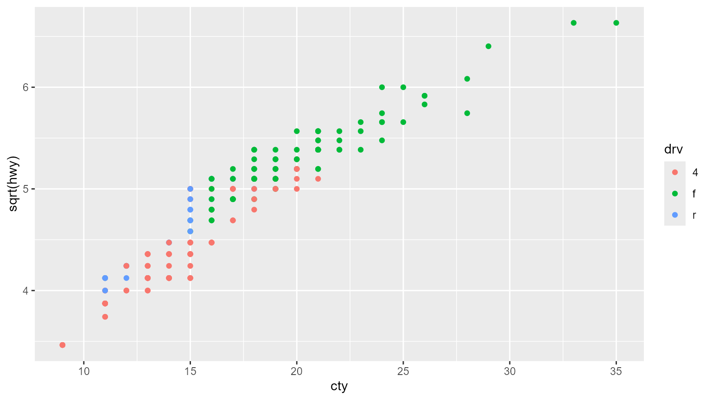

vignettes/articles/tinycodet.Rmd
tinycodet.RmdIntroduction
The tinycodet R-package adds some functions to help in
your coding etiquette. It primarily focuses on 4 aspects:
- Safer decimal (in)equality testing, standard-evaluated alternatives
to
with()andaes(), and other functions for safer coding. - A new package import system, that attempts to combine the benefits of using a package without attaching, with the benefits of attaching a package.
- Extending the string manipulation capabilities of the
stringiR package. - Reducing repetitive code.
The tinycodet R-package has only one dependency, namely
stringi. Most functions in this R-package are fully
vectorized and optimized, and have been well documented.
Here I’ll give a quick glimpse of what is possible in this R package.
Safer functionality
‘tinycodet’ adds some functions to help in coding more safely:
-
with_pro()andaes_pro()are standard-evaluated alternatives tobase::with()andggplot2::aes(). These use formulas as input. - In base R,
(0.1*3) == 0.3givesFALSE, due to the way decimal numbers are stored in programming languages like R and Python.tinycodetadds safer truth testing operators, that give correct results. - One can re-assign the values
TandF. One can even runT <- FALSEandF <- TRUE!.tinycodetadds thelock_TF()function that forcesTto stayTRUEandFto stayFALSE.
One example of aes_pro():
requireNamespace("ggplot2")
d <- import_data("ggplot2", "mpg")
x <- ~ cty
y <- ~ sqrt(hwy)
color <- ~ drv
ggplot2::ggplot(d, aes_pro(x, y, color = color)) +
ggplot2::geom_point()
New import system
One can use a package without attaching the package (for example
using ::), or one can attach a package (for example using
library() or require()). The advantages and
disadvantages of using without attaching a package versus attaching a
package - at least those relevant for now - can be compactly presented
in the following table:
| aspect | :: | attach | |
|---|---|---|---|
| 1 | prevent masking functions from other packages | Yes (+) | No (-) |
| 2 | prevent masking core R functions | Yes (+) | No (-) |
| 3 | clarify which function came from which package | Yes (+) | No (-) |
| 4 | place/expose functions only in current environment instead of globally | Yes (+) | No (-) |
| 5 | prevent namespace pollution | Yes (+) | No (-) |
| 6 |
minimize typing - especially for infix operators (i.e. typing package::`%op%`(x, y) instead of x %op% y is
cumbersome)
|
No (-) | Yes (+) |
| 7 |
use multiple related packages, without constantly switching between package prefixes |
No (-) | Yes (+) |
| NOTE: + = advantage, - = disadvantage |
What tinycodet attempts to do with its import system, is
to somewhat find the best of both worlds. It does this by introducing
the following functions:
-
import_as(): Import a main package, and optionally its re-exports + its dependencies + its extensions, under a single alias. This essentially combines the attaching advantage of using multiple related packages (row 7 on the table above), whilst keeping most advantages of using without attaching a package. -
import_inops(): Expose infix operators from a package or an alias object to the current environment. This gains the attaching advantage of less typing (row 6 in table above), whilst simultaneously avoiding the disadvantage of attaching functions from a package globally (row 4). -
import_data(): Directly return a data set from a package, to allow straight-forward assignment.
Here is an example using tinycodet's new import system;
note that the following code is run without attaching a single R package
(besides tinycodet itself of course):
# importing "tidytable" + "data.table" under alias "tdt.":
import_as(
~ tdt., "tidytable", dependencies = "data.table"
)## Importing packages and registering methods...## Done
## You can now access the functions using `tdt.$`
## For conflicts report, packages order, and other attributes, run `attr.import(tdt.)`
# exposing operators from `magrrittr` to current environment:
import_inops("magrittr")## Checking for conflicting infix operators in the current environment...## Placing infix operators in current environment...## Done
# directly assigning the "starwars" dataset to object "d":
d <- import_data("dplyr", "starwars")
# see it in action:
d %>% tdt.$filter(species == "Droid") %>%
tdt.$select(name, tdt.$ends_with("color"))## # A tidytable: 6 × 4
## name hair_color skin_color eye_color
## <chr> <chr> <chr> <chr>
## 1 C-3PO NA gold yellow
## 2 R2-D2 NA white, blue red
## 3 R5-D4 NA white, red red
## 4 IG-88 none metal red
## 5 R4-P17 none silver, red red, blue
## 6 BB8 none none black
Extending the string manipulation capabilities of stringi
‘tinycodet’ adds some additional functionality to ‘stringi’ (the primary package for string manipulation):
-
stri_locate_ith(): ‘stringi’ has functions to locate the first and last pattern occurrences. ‘tinycodet’ addsstri_locate_ith(), which can locate the pattern occurrence. - ‘stringi’ has some limited string arithmetic operators:
%s+%and%s*%. ‘tinycodet’ enlarges this set with additional string arithmetic operators. - ‘stringi’ has several string search and relation operators
(
%s==%,s%!=%). ‘tinycodet’ also enlarges this set with pattern searching operators (%s{}%,%s!{}%,strfind()<-). - cutting strings into pieces, without removing the delimiter, lies at
the core of (almost) all boundaries-operations in ‘stringi’. For the
user’s convenience, ‘tinycodet’ adds the
strcut_functions to cut strings in a more concise way (with less keystrokes).
Reduce repetitive code
# in base R:
ifelse( # repetitive, and gives unnecessary warning
is.na(object>0), -Inf,
ifelse(
object>0, log(object), object^2
)
)
mtcars$mpg[mtcars$cyl>6] <- (mtcars$mpg[mtcars$cyl>6])^2 # long
# with tinycodet:
object |> transform_if(\(x)x>0, log, \(x)x^2, \(x) -Inf) # compact & no warning
mtcars$mpg[mtcars$cyl>6] %:=% \(x)x^2 # short
The Articles
If you’re still interested, I invite you to read the articles on the website (https://tony-aw.github.io/tinycodet/), and perhaps try out the package yourself.
The following articles are currently present:
- Safer functionality: Describes the functions for safer/stricter coding.
-
Import
system - main functions: Description of the main functions of the
package import system introduced by
tinycodet. - Import system - additional details: Additional important details on the tinycodet import system.
-
String
related functions: Describes the
tinycodetfunctions that extend the string manipulation capabilities ofstringi. -
String
related infix operators: Describes the
tinycodetinfix operators that extend the string manipulation capabilities ofstringi. -
Don’t
Repeat Yourself: Describes the
tinycodetfunctions that help reduce repetitions in your code. -
Miscellaneous
functionality: Various other functions and operators that
tinycodetintroduces. -
Relations
to other R packages: Describes how
tinycodetrelates to other R packages, mostly regarding compatibility.
For a complete list of functions introduced by
tinycodet, please see the References
page.